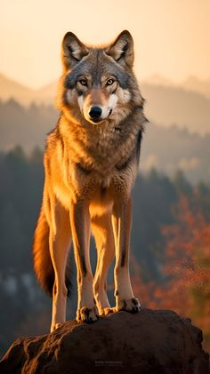

Factos divertidos sobre os lobos
- Os lobos comunicam-se com uivos, rosnados e gemidos para interações complexas
de matilha.
- O seu aguçado sentido do olfato deteta odores a quilómetros de distância para
caçar.
- Os lobos brincam de jogos como perseguição e luta para criar laços sociais.
- As grandes patas acolchoadas ajudam-nos a mover-se silenciosamente por
diferentes terrenos.
- As matilhas de lobos são lideradas por pares reprodutores, não necessariamente
os mais dominantes.
- Podem comer até 20 libras de comida numa única refeição.
-
Os lobos têm mandíbulas fortes capazes de exercer uma força de mordida imensa para esmagar ossos.